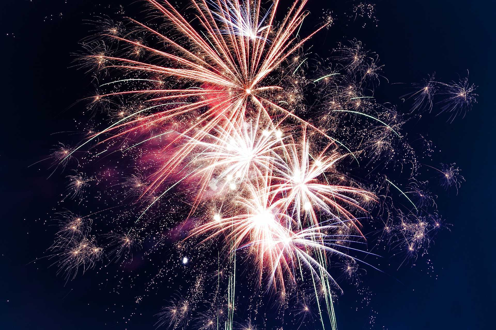

crackers
Home
Shop
SignIn
Firecrackers
A firecracker is a small explosive device primarily designed to produce a large amount of noise, especially in the form of a loud bang, usually for celebration or entertainment; any visual effect is incidental to this goal. They have fuses, and are wrapped in a heavy paper casing to contain the explosive compound. Firecrackers, along with fireworks, originated in China.
Celebration
Firecrackers are commonly used in celebration of holidays or festivals, such as Halloween, Independence Day in the United States, Diwali in India, Eid al-Fitr in Southeast Asia, Tihar in Nepal, Day of Ashura in Morocco, Guy Fawkes Night or Bonfire Night in the United Kingdom, Halloween in Ireland, Bastille Day in France, Spanish Fallas, in almost every cultural festival of Sri Lanka , New Year's Eve and New Year's Day, and in the celebration of Chinese New Year by Chinese communities around the world.
India

Firecrackers are easily available in India and are used to mark a celebratory event. They are legal, and anyone 18 and over can buy them without a licence. Diwali fireworks are a family event in many parts of India.People light up fireworks near their homes and in streets. Additionally, cities and communities have community fireworks